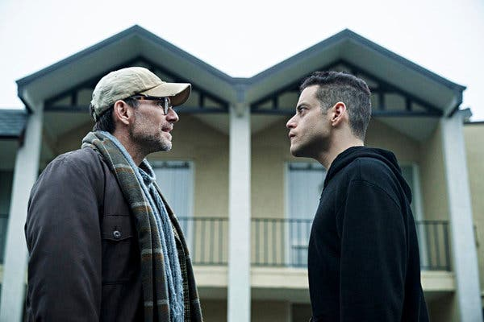
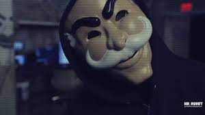

Personaje principal Eliot Alderson
Mr. Robot o cómo poner en duda que lo que vemos es real

Una organización que busca desbaratar el orden del mundo (borrando, de paso, las deudas de todos los habitantes del planeta) y reconocer el carácter informático de la realidad actual es el núcleo de una de las series de TV más revolucionarias e incomprendidas, cuya tercera temporada arranca el próximo 11 de octubre. La calidad de su guión, en gran medida, está dada por sus vínculos literarios que van desde Cicerón a Philip K. Dick: aquí vemos conspiraciones, paranoia, hackers, disociaciones y, cómo no, una interpretación del sentido que posee la muerte del padre.
Todo comienza con una voz en off que dice: “Esto es estúpido. Quizás debería nombrarte, pero eso es peligroso. Solo existes en mi cabeza. Debemos recordarlo”. En pocos segundos, la historia se despliega. Es el setup perfecto: el narrador instala el modo en el que representará la acción, el conflicto y una pregunta. Un hombre que habla consigo mismo, escindido, que plantea como destino la posibilidad de nombrar a ese otro (esa sombra con la que dialoga) y resolver el enigma, suspendiendo el peligro. Dos temporadas después sabemos algunas cosas, como que la realidad no es la misma y un grupo de hackers llamado #fsociety atentó contra el conglomerado más grande del mundo, Evil Corp, borrando los datos comerciales y financieros de todos sus usuarios, junto con la deuda de la gran mayoría de la Tierra.
El hombre que habla consigo mismo es Elliot Alderson, vive en Chinatown, Nueva York, trabaja como técnico de informática en AllSafe (una empresa que asesora a Evil Corp y desde donde se iniciará esta extraña revolución) y es el protagonista de Mr. Robot, una serie sobre hackers transmitida por USA Network, que parecía redundar en la conspiranoia y la pobre capacidad de anticipación que exhibieran películas como Hackers, The Net y Wargames, pero que se alzó con un guión sorprendente, haciéndose de un Globo de Oro para mejor serie dramática y actor secundario (2015, Christian Slater) y un Emmy para mejor actor (2016, Rami Malek). No obstante estos éxitos, esta serie (que partiera con audiencias de casi dos millones de espectadores en sus primeros capítulos) bajó su audiencia a menos de un millón al finalizar su segunda temporada, lo que hizo que los críticos la compararan con True Detective, más por la incapacidad para seguir produciendo audiencias y demanda, que por su calidad.